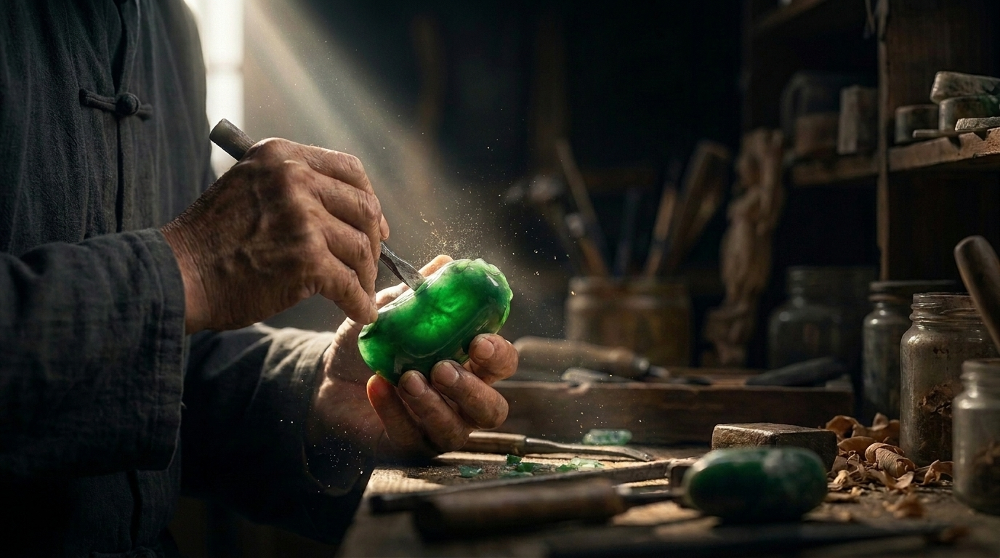

Memahami Arah Baik dalam Imperial Feng Shui
Dalam Imperial Feng Shui, arah bukan sekadar mata angin—ia menentukan bagaimana energi mengalir dan berkumpul di sebuah ruang. Artikel ini mengupas cara membaca kompas feng shui sederhana untuk menemukan posisi yang paling mendukung keberuntungan dan ketenangan di rumah maupun tempat usaha Anda.
Read More…